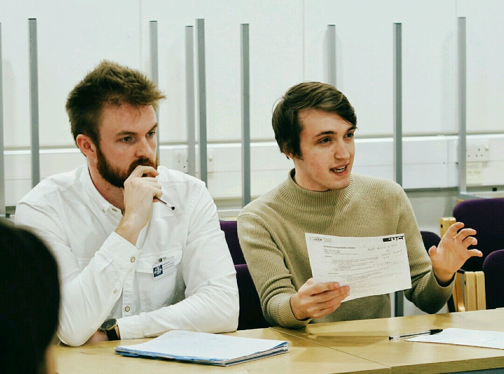

Debates at the UK Meet-up explored how we do synbio

The European Space Agency shaped our Gold BioBrick
Transport for London guided us on our bulb prototype
Kids at UCL's summer school want to genetically modify mules
Dance, bacteria, Dance!
We took people inside E. Coli cells by combining Dance Dance Revolution with transcription and turned translation into an arcade game. Held at London Science Museum’s Late event, we had the chance to listen to some of the 2000 attendees.
We asked ourselves how we could make science communication in the context of synthetic biology better. Soon, we realized that first we should discover through our activities what ‘better’ means. Science communication is broadly defined, but does it relate to making people make familiar with concepts, inspiring people, enabling them to do new things or equipping them with skills?
It may serve one or more of the ones that we mentioned, at the same time or separately. Inspired by the idea of learning through play, we set out to explore how effective gamification can be at making the synthetic biology community better at communicating with other fields and the general public.
One of our initial prototypes included a live quorum sensing exercise. We hypothesized that if people take part in the same processes that bacteria undertake, a more intuitive understanding of the process would emerge.
The first sketches had people moving around using apps to raise protein concentrations in various locations around London in order to produce phenotypes characteristic of bacteria. We even had the idea to have people become cellular automata that can behave according to only a few rules - an idea that we did explore in the context of communicating our project better through our GOLIT model.
Given technical and time constraints, we shifted towards designing an installation to provide an intuitive understanding of the central dogma of molecular biology and provoke thought about our project and the future of synthetic biology. We focused on these outcomes as they seem to be skills that people can use when encountering a new story about recent developments in biology.
The installation involves two participants ‘becoming’ E. Coli cells to learn about the building blocks of any biological system. Put simply, the game will provide an intuitive understanding of how DNA codes for proteins.
We chose to combine the DANCE DANCE Revolution game with biology. Conceptually, the first person performs transcription of DNA to mRNA, while the second participant does the translation into protein.
Upon reflecting on our experience of designing, prototyping, building and deploying the 2 games, we reached one major conclusion. Namely, that the most potential for games in the future of synthetic biology is to equip people with the necessary skills to learn about synthetic biology.
In computer programming, initiatives such as the Logo programming language or the more recent Scratch enable children to think about the world around them differently and to express themselves through coding. Key to these projects is the idea of letting one create.
These ideas are tightly linked to what synthetic biology means for the future. Similar to computer literacy, being able to ‘read and write bio’ will be one of the most exciting skills to have. Learning to learn in synthetic biology has its own quirks, given the messy nature of organic life forms. However, this should be the goal of future gamification initiatives in synthetic biology.
How 17-year olds want to make mules make love to each other
We tested the technique of discussion facilitation in a medium-scale event. Based on a team member’s experience with the guidelines used in management consulting by companies such as Deloitte, we organised the session as an introduction to synthetic biology and our biological light switches and their applications. The lucky ones were adolescents taking part in the UCL Sutton Trust Biosciences Summer School.
Our introduction of the project and synthetic biology focused on asking students what their knowledge about the field is and then built upon this. For example, we highlighted the need for interdisciplinary work and then asked why that might be important. We discussed examples of how mathematical modelling can be combined with wet lab experiments and then entrepreneurship.
What worked well was having the students diverge and talk among themselves about given points and then converge back to share everyone’s opinion and then summarise conclusion or take-away points along the way.
The most interesting example came in a discussion initiated by a student: ‘We should make mules fertile, as it can benefit agriculture’.
We went through 4 or 5 turns of diverging and converging to cover points such as:
- what are the real-life trade-offs of modifying mules in an agricultural context?
- if gene drives are used, what unwanted consequences can come along?
how should experimentation happen – behind closed doors or in a transparent manner
What we hope to have had achieved was to give students a more holistic way of looking at ideas in synthetic biology. We encourage future teams to try and seek communication techniques from other fields that specialize in getting to the heart of problems, such as in management consulting.
Smart Dinner
Together with EatOffTheMenu, we organized a dinner for 8-10 people, to have a meal and discuss synthetic biology freely.
We wanted to explore public engagement in a more intimate and closed setting, where we would have enough time to dedicate to talking about synthetic biology and our project.
Future iGEM teams might want to explore organising small events that while not reaching many people, builds useful connections and relationships with members of the public.